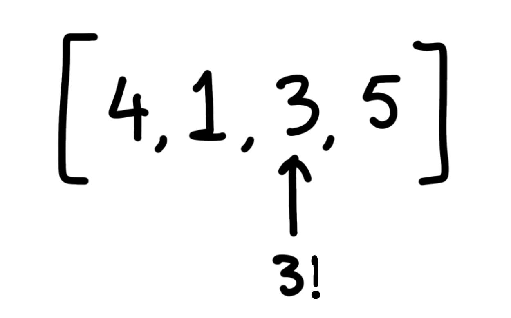
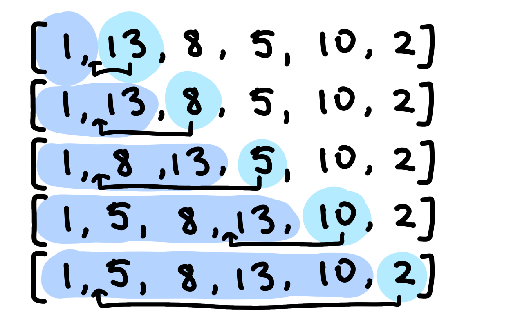
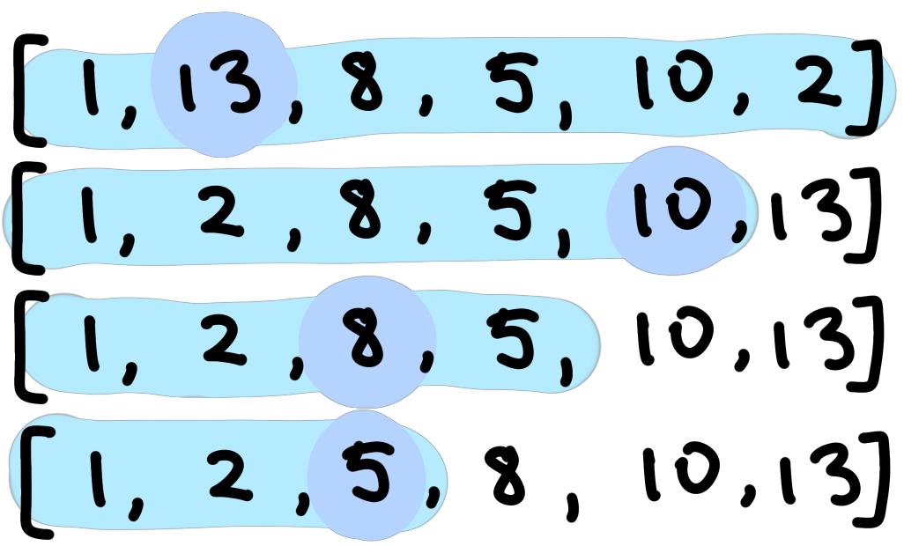
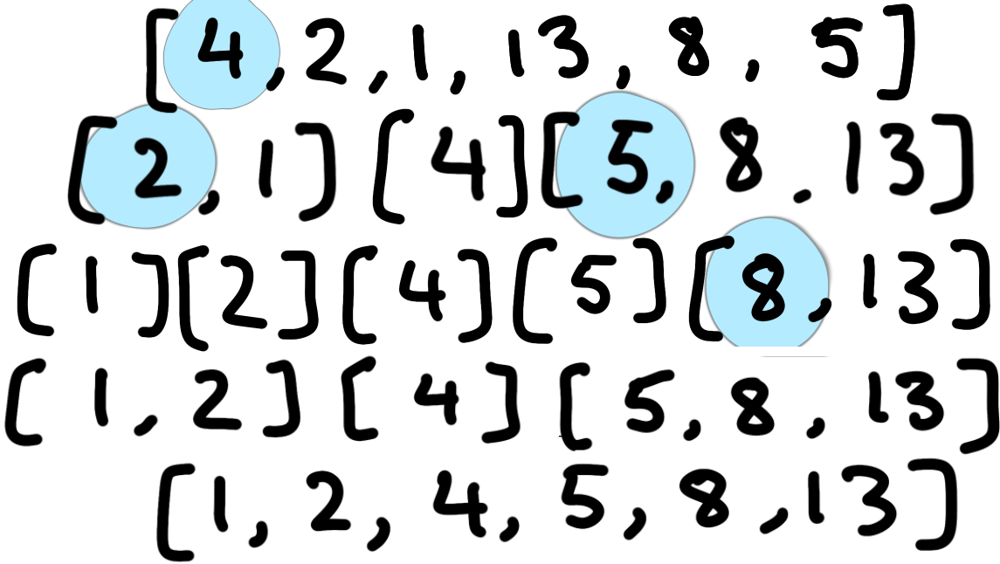

Searching - An algorithm to find a specific target in a list
Sorting - Rearranging the list so the elements are in ascending or descending order
Sequential Search is when you go through each element of the array linearly in order to find the target. This takes
O(n) time

Binary Search is when you look at the middle element of a range in the array and check if the middle is the target, or if the middle is before or after the target.
Notice that binary search only works on sorted arrays and will take
O(log n) time.
In the list, it will try to find the element between two indexes, low and high, so that the target should be between range low and high inclusive. These are examples of 2 - pointers.
It then checks the middle element of the range to see if it is the same, greater, or less than.
If the middle element is equal, then return the index.
If it’s greater, then the target must be somewhere before it in the list, so the high pointer can be set to the current index - 1.
If it’s lower, then the target must be somewhere after it in the list, so the low pointer can be set to the current index + 1.
Then, reuse this algorithm on the next range until the target has been found or high < low, which means that the target is non-existent or not in the list
Can be implemented using iterative while loop or recursion

Let's say the first line is the sorted array, and we are trying to find the target value, 7. We will find the middle value, which will be 5.
We then notice that 5 < 7, which means that the target must be after the current element. We move the pointer to the middle of the new range, and it goes to value 8.
We then notice that 8 > 7, which means that the target must be before the current element. We move the pointer to the middle of the new range, and it goes to 6.
public int binarySearch(int[] ar, int find, int low, int high) {
if (low <= high) {
int mid = (low + high) / 2;
if (ar[mid] == find) return mid;
else if (ar[mid] > find) return binarySearch(ar, find, low, mid - 1);
else return binarySearch(ar, find, mid + 1, high);
}
return -1;
}
public int binarySearch(int[] ar, int find, int low, int high) {
while (low <= high) {
int mid = (low + high) / 2;
if (ar[mid] == find) return mid;
else if (ar[mid] > find) high = mid - 1;
else low = mid + 1;
}
return -1;
}
Insertion - Take the first k elements and assume that it is sorted. k will start as 1. Take the next element to the right, and find where to insert it. Insert it and increase k.

Insertion sort involves splitting the array into the 'sorted' part and the 'unsorted' part. The sorted part starts with a length of 1.
We take the next element of the unsorted array, and use sequential sort from the end of the sorted part to replace the last element with the element before, so that all the elements are moved back. Then, once the index of insertion is found, replace it with the target.
To the left, we can see a visual demonstration.
The time complexity of Insertion Sort is O(n^2)
Pseudocode:
for each element of the unsorted, starting from 1 to n:
take value of element that will be sorted
let n be the length of the sorted part
while the nth element of the sorted part is smaller than current element:
change element to the previous element
update n
make the nth element the first element of the unsorted part
public int insertionSort(double[] ar, int find, int n) {
for (int i = 1; i < n; i++) {
double temp = arr[i];
int num = i;
while (num > 0 && arr[num - 1] > temp) {
arr[num] = arr[num - 1];
num--;
}
arr[num] = temp;
}
}
Selection Sort:
Selection sort selects the smallest element from an unsorted list in each iteration and places that element at the beginning of the unsorted list. The idea is to find the largest element and move it to the back. Find the second-largest element, or the largest element within range 1 to length - 1, and move it to the second-last element. Continue until there is only 1 element left from range 1 to 2.
Time Complexity: O(n^2)
public void selectionSort (double[] arr, int n) {
while (n > 1) {
int maxPos = 0;
for (int i = 1; i < n; i++) {
if (arr[i] > arr[maxPos]) maxPos = i;
}
double temp = arr[maxPos];
arr[maxPos] = arr[n - 1];
arr[n - 1] = temp;
n--;
}
}

Merge Sort:
Merge Sort is the idea of breaking up an array into smaller subarrays, sorting each subarray, and then recombining the sorted subarrays to create the final sorted array.
Time Complexity: O(nlogn)
public void mergeSort(double[] arr, int from, int to) {
if (from <= to) return;
int middle = (from + to) / 2;
mergeSort(arr, from, middle);
mergeSort(arr, middle + 1, to);
if (arr[middle] > arr[middle + 1]) {
copy(arr, from, to, temp);
merge(temp, from, middle, to, arr);
}
}

Quick Sort:
Quick Sort works by splitting a large array of data into smaller sub-arrays.
It picks one element and makes it the pivotal. Then, it separates or partitions the rest of the list into two lists, one being the list greater than the pivotal and one being the list smaller than the pivotal. Then, use quicksort on the left and right segments and add them all together
Time Complexity: O(nlogn)
public void quickSort(int[] arr, int low, int high) {
if (low < high) {
int pivot = arr[high];
int i = (low - 1);
for (int j = low; j <= high - 1; j++) {
if (arr[j] < pivot) {
i++;
swap(arr, i, j);
}
}
swap(arr, i + 1, high);
int pi = (i + 1);
quickSort(arr, low, pi - 1);
quickSort(arr, pi + 1, high);
}
}
public void swap(int[] arr, int i, int j) {
int temp = arr[i];
arr[i] = arr[j];
arr[j] = temp;
}

In the visual representation above, the light blue represents the pivotal that I have picked.